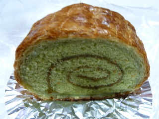
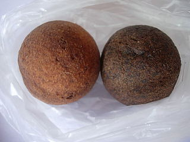

フルールの抹茶ロール
2013/04/24
パン屋さんのロールケーキですね。

抹茶の和菓子のようであり、洋菓子のロールケーキのようだったり、デニッシュパンだったりする商品でした。
それぞれの美味しい味が組み合わさっていて、面白い味でした。
島根県出雲市塩冶神前2丁目7-10
閉店しました。
2013/04/24
パン屋さんのロールケーキですね。

抹茶の和菓子のようであり、洋菓子のロールケーキのようだったり、デニッシュパンだったりする商品でした。
それぞれの美味しい味が組み合わさっていて、面白い味でした。
2008/6/7
医大の中にあるパン屋さんに行きました。「大学病院なので土日は休みかな？」と思いながら行ってみたんですが、ちゃんと土日でも営業していました。
でも病院は休日なので、通常の入り口じゃない所から入ります。
ころころとしたボール状のドーナッツですが、ちょっと弾力のあるホットケーキみたいな商品でした。

普通のとチョコタイプがあったんですが、普通のがとっても美味しかったです。
また買いに行きたいって思いました。